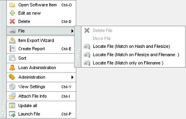
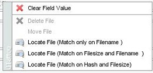

File Operations
Menu path: View > Right-click on item
Menu path: Item Form > Right-click on file field
By default Data Crow does not interfere with the files on your system. For example: when you delete a book item which has a PDF file linked to it
Data Crow will not delete the file itself, only the book item. You can however make use of the "files" menu from the view popup menu or from the
options offered by the file fields.

Popup menu of the view

Popup menu of the file field of the item form
Clear Field Value
Clears the filename from the file field, but leaves the file itself alone.
Delete File
Deletes the underlying file and clears the file information from the item.
Move File
Moves the file to a different location (of your choice).
Locate File
Tries to locate a file for you. Very convenient when the file has been moved and you don't know where to. It actually uses
the Drive Manager. You have several options available. These options are explained in the Drive Manager section.